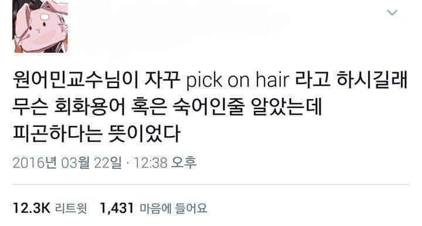

이미지 게임이란? 방장과 참가자 모두 검정색 프사와 닉네임 "." 으로 통일하여 게임 진행 내내 누가 누군지 알 수 없는 게임이다. 눈만 보이게 찍은 눈공 이미지와 (요즘엔 마스크 쓴 사진으로도 진행해서 마스크 이미지라고도 함) 얼굴 전체를 다 가려서 머리 + 옷 느낌만 보고 하는 분위기 이미지 게임으로 나뉜다. 방장은 참여자들의 셀카를 취합하여 각 셀카에 번호를 매긴다. 보통 한 게임은 전체 질문과 개인 질문 파트로 나뉘는데, 전체 질문 시간은 다음과 같이 진행된다. 방장이 ex) "제일 연애 많이 해봤을 것 같은 사람?" 같은 질문에 번호로 대답하고 가장 많은 번호가 나온 사람이 사실을 밝히거나 소감을 말하는 이른바 해명타임을 갖고 다시 그 사람이 질문을 한다. 개인 질문 시간에는 1번부터 "1번에게 궁금한 점 2분간 질문"하는 시간을 갖고 일괄적으로 답변하는 시간이다. 보통 이상형, 나이, MBTI, 사는 곳, 연상 vs 동갑 vs 연하, 마음에 드는 번호가 짝수/홀수번인지 등을 물어본다. 게임 종료 후 자신의 오픈카톡방 주소를 올리고 가거나 커뮤니티에 특정 번호를 찾아서 연락이 이어지는 경우도 발생한다.
최근 들어 목소리 이미지 게임도 생겼는데, 목소리 이미지는 다른 이미지 게임과 진행방식은 모두 동일하지만 전체 질문 시간의 해명 타임과 개인 질문 시간의 답변만 음성녹음으로 답하는 것이 차이점이다. 목소리가 좋거나 사람을 볼 때 목소리가 중요하다 싶은 참가자는 목소리 이미지도 눈여겨 보면 좋을 듯하다. 자매품으로 사진 없이 바로 목소리로만 진행되는 목소리 이미지도 있다. 바로 글귀를 하나 읽고 나이, 사는 곳, 직업, 이상형, 본인 스타일, MBTI 정도만 말하고 개인 질문으로 넘어가는 형태이다. 최근에 사용했던 글귀 한 가지는 다음과 같다.
